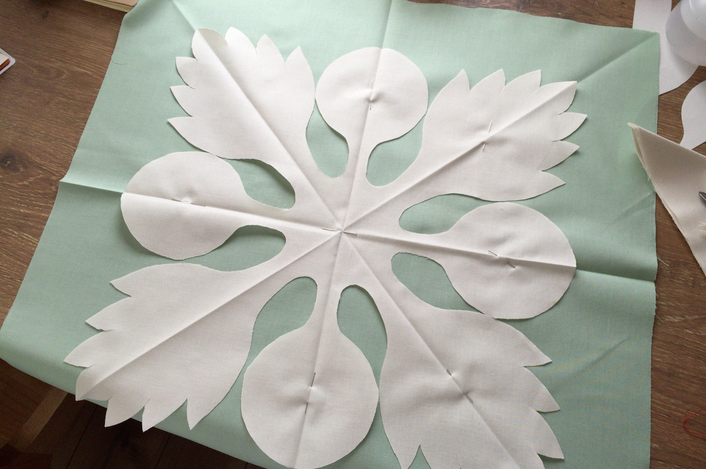
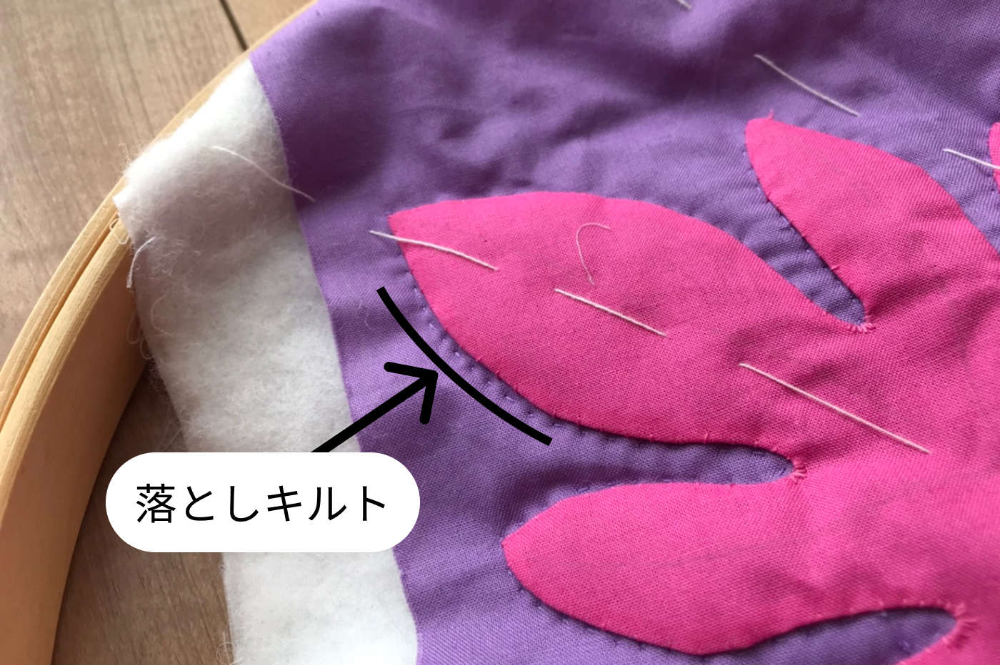

何がきっかけだったか思い出せませんが、ハワイアンキルトを作るのが好きです。
ハワイアンキルトとは
諸説ありますが、1820年代にハワイへやってきたイギリス人宣教師の妻たちによって伝えられたパッチワークキルトが独自に発展したものです。ハワイのビーチに干したシーツに映ったレフアやヤシの葉の影がとても美しく、その形を切り取ってシーツにアップリケしたことから始まったと言われています。
写真は1880年に作られたハワイアンキルトの作品です。当時は染料も少なかったことから白無地に色無地を使ったデザインが主流でした。
こちらの赤いモチーフは伝統的なプリンセスフェザーと言う植物のパターンだそうです。
プリンセスフェザー↓これ（見比べると、あ、なるほどなって感じですね）
近年は、様々な色を使ったハワイアンキルトが人気ですが、私は白地に1色だけを使用した伝統的なハワイアンキルトのデザインが好きです。数年前に、白と青を基調とした大きめカバンを作ったので紹介します！赤子も入るBigサイズ。

ハワイアンキルトの制作は果てしなく長い道のりです。
記事も長くなりますが、どうかついてきてください！
まず、モチーフをデザインしパターンを作ります。（私は、みなさんご存知（？）ハワイアンキルト会の大御所「キャシー中島」さんの出しているキットを使って制作しました。布とか材料が入ったキットですが、そのお値段7,980円。大御所のデザイン料ですね。）
色々なモチーフの載ったパターン本も多く出ているので、それを活用するのも良しです。
キルト関連の書籍は、いつの間にかこんなに沢山集めていました。
適当な写真がなく違う作品の写真なのですが、パターンができたら次は、アップリケしたい布をパタパタ折って、パターン通りにカットします。
カットした布を、今度は土台となる布の上で広げます。
ザックリとしつけをして、土台布に仮止めしていきます。
ここからアップリケ作業に入ります。
モチーフ生地の端を3ミリほど内側に折り、表に縫い目が響かないようにベースの布に縫いとめていきます。
全部縫いとめた状態がこれ。
布端が内側に入ってキレイになりました。
続いて、キルト綿と言うシート状になった綿を、先ほどのアップリケを施した布と、捨て布と呼ばれる布でサンドします。そしてまた、ずれないように放射状にしつけをかけます。
ここからキルティングと呼ばれる作業に入ります。

指をこんなふうに保護して、フープと呼ばれる輪っかで布を固定し、キルト用の小さな針でチクチクステッチを施していきます。
はじめにモチーフの周りに「落としキルト」と呼ばれるステッチを入れます。これで、アップリケしたモチーフがふっくらと見えます。
落としキルトができたらモチーフの模様をキルティングしていきます。葉っぱの葉脈など、自然に寄り添ったデザインのキルトラインが多いです。
モチーフのキルティングができたら、続いて外側の部分をキルティングしていきます。
こちらはエコーキルトと呼ばれ、モチーフのアウトラインがそのまま波紋のように外へと広がっていきます。ハワイアンキルトの特徴です。ハワイの波を感じるおおらかな感じが良いですね＾＾
底の部分に当たるパーツもしつけを施してひたすらキルティング。
底ができました。
そんなこんなで仕上がったものを、今度はカバンやクッションなどの目標物へと仕立てようやく完成！
ちなみに、途中で情熱が途絶えるので、仕上がるまでに年単位で時間がかかりました。
余談
インスタに投稿したら、タグ機能の恩恵を受け、神本人（キャシー中島）がイイネボタンを押してくれました。ワーオ！ミーハー心が炸裂した瞬間です。

以上ハワイアンキルトのお話でした。読むだけでもゲッツりするような数々のプロセスを踏んでハワイアンキルトは出来上がります。もし、街で見かける機会があれば是非、作ってるおばちゃんスゴっと言う気持ちで見てみてください＾＾。最後まで読んでいただいてありがとうございました！予想以上に長くなってしまった。